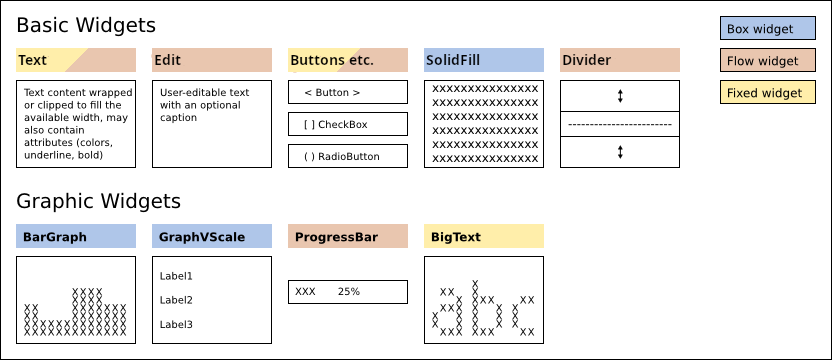

Widgets¶
Widget Layout¶
Urwid uses widgets to divide up the available screen space. This makes it easy to create a fluid interface that moves and changes with the user’s terminal and font size.

The result of rendering a widget is a canvas suitable for displaying on the screen. When we render the topmost widget:
The topmost widget (a) is rendered the full size of the screen
(a) renders (b) any size up to the full size of the screen
(b) renders (c), (d) and (e) dividing its available screen columns between them
(e) renders (f) and (g) dividing its available screen rows between them
(e) combines the canvases from (f) and (g) and returns them
(b) combines the canvases from (c), (d) and (e) and returns them
(a) possibly modifies the canvas from (b) and returns it
Widgets (a), (b) and (e) are called container widgets because they contain other widgets. Container widgets choose the size and position of their contained widgets.
Container widgets must also keep track of which one of their contained widgets is in focus. The focus is used when handling keyboard input. If in the above example (b) ‘s focus widget is (e) and (e) ‘s focus widget is (f) then keyboard input will be handled this way:
The keypress is passed to the topmost widget (a)
(a) passes the keypress to (b)
(b) passes the keypress to (e), its focus widget
(e) passes the keypress to (f), its focus widget
(f) either handles the keypress or returns it
(e) has an opportunity to handle the keypress if it was returned from (f)
(b) has an opportunity to handle the keypress if it was returned from (e)
(a) has an opportunity to handle the keypress if it was returned from (b)
Box, Flow and Fixed Widgets¶
The size of a widget is measured in screen columns and rows. Widgets that are given an exact number of screen columns and rows are called box widgets. The topmost widget is always a box widget.
Much of the information displayed in a console user interface is text and the best way to display text is to have it flow from one screen row to the next. Widgets like this that require a variable number of screen rows are called flow widgets. Flow widgets are given a number of screen columns and can calculate how many screen rows they need.
Occasionally it is also useful to have a widget that knows how many screen columns and rows it requires, regardless of the space available. This is called a fixed widget.
sizing mode |
width |
height |
|---|---|---|
|
container decides |
container decides |
|
container decides |
widget’s |
|
widget’s |
widget’s |
It is an Urwid convention to use the variables maxcol and
maxrow to store a widget’s size. Box widgets require both of (maxcol,
maxrow) to be specified.
Flow widgets expect a single-element tuple (maxcol,) instead because they
calculate their maxrow based on the maxcol value.
Fixed widgets expect the value () to be passed in to functions that take
a size because they know their maxcol and maxrow values.
Included Widgets¶
Basic and graphic widgets are the content with which users interact. They may also be used as part of custom widgets you create.

Decoration Widgets¶
Decoration widgets alter the appearance or position of a single other widget.
The widget they wrap is available as the
original_widget property.
If you might be using more than one decoration widget you may use the
base_widget property to access the
“most” original_widget.
Widget.base_widget points to self on all non-decoration widgets, so
it is safe to use in any situation.
Container Widgets¶
Container widgets divide their available space between their child widgets. This is how widget layouts are defined. When handling selectable widgets container widgets also keep track of which of their child widgets is in focus. Container widgets may be nested, so the actual widget in focus may be many levels below the topmost widget.
Urwid’s container widgets have a common API you can use, regardless of the container type. Backwards compatibility is still maintained for the old container-specific ways of accessing and modifying contents, but this API is now the preferred way of modifying and traversing containers.
container.focus
is a read-only property that returns the widget in focus for this container.
Empty containers and non-container widgets (that inherit from Widget)
return None.
container.focus_position
is a read/write property that provides access to the position of the
container’s widget in focus. This will often be an integer value but may be
any object.
Columns, Pile, GridFlow, Overlay and
ListBox with a SimpleListWalker or SimpleFocusListWalker
as its body use integer positions. Frame uses 'body', 'header'
and 'footer'; ListBox with a custom list walker will use the
positions the list walker returns.
Reading this value on an empty container or on any non-container widgets
(that inherit from Widget) raises an IndexError. Writing to this property with
an invalid position will also raise an IndexError. Writing a new value
automatically marks this widget to be redrawn and will be reflected in
container.focus.
container.contents
is a read-only property (read/write in some cases) that provides access to a
mapping- or list-like object that contains the child widgets and the options
used for displaying those widgets in this container. The mapping- or list-like
object always allows reading from positions with the usual __getitem__()
method and may support assignment and deletion with __setitem__() and
__delitem__() methods. The values are (child widget, option) tuples.
When this object or its contents are modified the widget is automatically
flagged to be redrawn.
Columns, Pile and GridFlow allow assigning an
iterable to container.contents to overwrite the values in
with the ones provided.
Columns, Pile, GridFlow, Overlay and
Frame support container.contents item assignment and deletion.
container.options(...)
is a method that returns options objects for use in items added to
container.contents. The arguments are specific to the container type,
and generally match the __init__() arguments for the container.
The objects returned are currently tuples of strings and integers or None
for containers without child widget options. This method exists to allow
future versions of Urwid to add new options to existing containers. Code
that expects the option tuples to remain the same size will fail when new
options are added, so defensive programming with options tuples is strongly
encouraged.
container.__getitem__(x)
# a.k.a.
container[x]
is a short-cut method behaving identically to:
container.contents[x][0].base_widget.
Which means roughly “give me the child widget at position x and skip all
the decoration widgets wrapping it”. Decoration widgets include
Padding, Filler, AttrMap etc.
container.get_focus_path()
is a method that returns the focus position for this container and all child containers along the path defined by their focus settings. This list of positions is the closest thing we have to the singular widget-in-focus in other UI frameworks, because the ultimate widget in focus in Urwid depends on the focus setting of all its parent container widgets.
container.set_focus_path(p)
is a method that assigns to the focus_position property of each container
along the path given by the list of positions p. It may be used to restore
focus to a widget as returned by a previous call to container.get_focus_path().
container.get_focus_widgets()
is a method that returns the .focus values starting from this container
and proceeding along each child widget until reaching a leaf
(non-container) widget.
Note that the list does not contain the topmost container widget (i.e., on which this method is called), but does include the lowest leaf widget.
container.__iter__()
# typically
for x in container: ...
container.__reversed__()
# a.k.a
reversed(container)
are methods that allow iteration over the positions of this container.
Normally the order of the positions generated by __reversed__() will be the
opposite of __iter__(). The exception is the case of ListBox with
certain custom list walkers, and the reason goes back to the original way list
walker interface was defined. Note that a custom list walker might also generate
an unbounded number of positions, so care should be used with this interface and
ListBox.
Pile Widgets¶
Pile widgets are used to combine multiple widgets by stacking them vertically.
A Pile can manage selectable widgets by keeping track
of which widget is in focus and it can handle moving the focus between widgets
when the user presses the UP and DOWN keys.
A Pile will also work well when used within a ListBox.
A Pile is selectable only if its focus widget is selectable. If you create a Pile containing one Text widget and one Edit widget the Pile will choose the Edit widget as its default focus widget.
Columns Widgets¶
Columns widgets may be used to arrange either flow widgets,
box widgets or fixed widgets horizontally into columns.
Columns widgets will manage selectable widgets by keeping track of which column is in focus and it can
handle moving the focus between columns when the user presses the LEFT and RIGHT keys.
Columns widgets also work well when used within a ListBox.
Columns widgets are selectable only if the column in focus is selectable. If a focus column is not specified the first selectable widget will be chosen as the focus column.
GridFlow Widgets¶
The GridFlow widget is a fixed/flow widget designed for use
with Button, CheckBox and RadioButton widgets.
It renders all the widgets it contains the same width
and it arranges them from left to right and top to bottom.
The GridFlow widget uses Pile, Columns, Padding and Divider widgets to build a display widget that will handle the keyboard input and rendering. When the GridFlow widget is resized it regenerates the display widget to accommodate the new space.
Overlay Widgets¶
The Overlay widget is a box/flow/fixed widget that contains two other widgets.
The bottom widget is BOX rendered the full size of the Overlay widget
and the top widget is placed on top, obscuring an area of the bottom widget.
Widget sizing depends on the top widget sizing and sizing options.
This widget can be used to create effects such as overlapping “windows” or pop-up menus.
The Overlay widget always treats the top widget as the one in focus. All keyboard input will be passed to the top widget.
If you want to use a flow widget for the bottom widget,
first wrap the flow widget with a Filler widget.
Scrollable Widgets¶
Scrollable widgets can scroll long content which normally not fit into the screen resolution. Scrolling is normally supported using keyboard positioning keys and mouse wheel.
For scrolling is expected to be used ScrollBar which accept any BOX widget supporting scrollable api.
ScrollBar Widget¶
The ScrollBar widget draw optional scrollbar on the right or left side of widget if scrolling is required
(widget not fit in the desired amount of rows).
The widget is always rendered BOX and wrapped widget is also should be BOX.
In case of other widget types, they should be wrapped to support BOX sizing.
Scrollablemake any FLOW or FIXED widget compatible with scrollable api.ListBoxcan be used withScrollBardirectly, all input is always handled byListBoxand it’s widgets.
Keyboard positioning keys and mouse wheel is used for scrolling if not handled by the wrapped widget. Scrolling is done on per-line basis.
Scrollable Widget¶
The Scrollable widget is used to make any FLOW or FIXED widget compatible with scrollable api by changing
target widget render and scrolling along full-size / columns defined sized widget.
Keyboard positioning keys and mouse wheel is used for scrolling if not handled by the wrapped widget.
Note
Scrollable do not recognize if selectable wrapped widget part visible or not
if wrapped widget do not draw cursor.
This means, keyboard input maybe forwarded to the wrapped selectable widget even if it not visible.
Mouse input is not affected by this limitation due to known column and raw of mouse event.
Comparing to the ListBox,
Scrollable handles fixed and flow widgets directly instead of using list of small widgets.
ListBox should be used to scroll between widgets, which can be multiline by itself.
Scrollable API¶
Widget pretending to be scrolled via ScrollBar should subclass Widget
and implement positioning API:
- Scrollable.get_scrollpos(size=None, focus=False)¶
Get scrolling position
- Parameters:
size (tuple[int, int] | None) – widget render size. If size is not given, the currently rendered number of rows is returned.
focus (bool) – widget is focused
- Returns:
the index of the first visible row.
- Return type:
int
- Scrollable.set_scrollpos(position: SupportsInt)¶
Optional method for setting scrolling position.
Method is called on mouse wheel scroll if it implemented and mouse event was not handled by widget.
If position is positive it is interpreted as lines from the top. If position is negative it is interpreted as lines from the bottom.
- Scrollable.rows_max(size=None, focus=False)¶
Get the total number of rows widget can render.
- Parameters:
size (tuple[int, int] | None) – widget render size. If size is not given, the currently rendered number of rows is returned.
focus (bool) – widget is focused
- Returns:
the number of rows for size
- Return type:
int
ListBox Contents¶
ListBox is a box widget that contains flow widgets.
Its contents are displayed stacked vertically, and the
ListBox allows the user to scroll through its content.
One of the flow widgets displayed in the ListBox is its
focus widget.
ListBox Focus and Scrolling¶
The ListBox is a box widget that contains flow widgets.
Its contents are displayed stacked vertically, and the
ListBox allows the user to scroll through its content.
One of the flow widgets displayed in the ListBox is the
focus widget. The ListBox passes key presses to the
focus widget to allow the user to interact with it. If the focus widget does
not handle a keypress then the ListBox may handle the
keypress by scrolling and/or selecting another widget to become the focus
widget.
The ListBox tries to do the most sensible thing when
scrolling and changing focus. When the widgets displayed are all
Text widgets or other unselectable widgets then the
ListBox will behave like a web browser does when the
user presses UP, DOWN, PAGE UP and PAGE DOWN: new text is immediately
scrolled in from the top or bottom. The ListBox chooses
one of the visible widgets as its focus widget when scrolling. When scrolling
up the ListBox chooses the topmost widget as the focus,
and when scrolling down the ListBox chooses the
bottommost widget as the focus.
The ListBox remembers the location of the widget in
focus as either an “offset” or an “inset”. An offset is the number of rows
between the top of the ListBox and the beginning of the
focus widget. An offset of zero corresponds to a widget with its top aligned
with the top of the ListBox. An inset is the fraction
of rows of the focus widget that are “above” the top of the
ListBox and not visible. The
ListBox uses this method of remembering the focus
widget location so that when the ListBox is resized the
text displayed will stay roughly aligned with the top of the
ListBox.
When there are selectable widgets in the ListBox the
focus will move between the selectable widgets, skipping the unselectable
widgets. The ListBox will try to scroll all the rows of
a selectable widget into view so that the user can see the new focus widget in
its entirety. This behavior can be used to bring more than a single widget into
view by using composite widgets to combine a selectable widget with other
widgets that should be displayed at the same time.
Dynamic ListBox with ListWalker¶
While the ListBox stores the location of its focus
widget, it does not directly store the actual focus widget or other contents of
the ListBox. The storage of a
ListBox’s content is delegated to a “List Walker”
object. If a list of widgets is passed to the ListBox
constructor then it creates a SimpleListWalker object
to manage the list.
When the ListBox is rendering a canvas or handling
input it will:
Call the
get_focus()method of its list walker object. This method will return the focus widget and a position object.Optionally call the
get_prev()method of its List Walker object one or more times, initially passing the focus position and then passing the new position returned on each successive call. This method will return the widget and position object “above” the position passed.Optionally call the
get_next()method of its List Walker object one or more times, similarly, to collect widgets and position objects “below” the focus position.Optionally call the
set_focus()method passing one of the position objects returned in the previous steps.
This is the only way the ListBox accesses its contents,
and it will not store copies of any of the widgets or position objects beyond
the current rendering or input handling operation.
The SimpleListWalker stores a list of widgets, and uses
integer indexes into this list as its position objects. It stores the focus
position as an integer, so if you insert a widget into the list above the focus
position then you need to remember to increment the focus position in the
SimpleListWalker object or the contents of the
ListBox will shift.
A custom List Walker object may be passed to the
ListBox constructor instead of a plain list of widgets.
List Walker objects must implement the List Walker Interface.
The fib.py example program demonstrates a custom list walker that doesn’t
store any widgets. It uses a tuple of two successive Fibonacci numbers as its
position objects and it generates Text widgets to display the numbers on the
fly. The result is a ListBox that can scroll through an
unending list of widgets.
The edit.py example program demonstrates a custom list walker that loads lines from a text file only as the user scrolls them into view. This allows even huge files to be opened almost instantly.
The browse.py example program demonstrates a custom list walker that uses a tuple of strings as position objects, one for the parent directory and one for the file selected. The widgets are cached in a separate class that is accessed using a dictionary indexed by parent directory names. This allows the directories to be read only as required. The custom list walker also allows directories to be hidden from view when they are “collapsed”.
Setting the Focus¶
The easiest way to change the current ListBox focus is
to call the ListBox.set_focus() method. This method doesn’t
require that you know the ListBox’s current dimensions
(maxcol, maxrow). It will wait until the next call to either keypress or
render to complete setting the offset and inset values using the dimensions
passed to that method.
The position object passed to set_focus() must be compatible with the
List Walker object that the ListBox is using. For
SimpleListWalker the position is the integer index of
the widget within the list.
The coming_from parameter should be set if you know that the old position is
“above” or “below” the previous position. When the
ListBox completes setting the offset and inset values
it tries to find the old widget among the visible widgets. If the old widget is
still visible, if will try to avoid causing the ListBox
contents to scroll up or down from its previous position. If the widget is not
visible, then the ListBox will:
Display the new focus at the bottom of the
ListBoxif coming_from is “above”.Display the new focus at the top of the
ListBoxif coming_from is “below”.Display the new focus in the middle of the
ListBoxif coming_from isNone.
If you know exactly where you want to display the new focus widget within the
ListBox you may call
ListBox.set_focus_valign(). This method lets you specify
the top, bottom, middle, a relative position or the exact number of rows
from the top or bottom of the ListBox.
List Walkers¶
ListBox does not manage the widgets it displays
directly, instead it passes that task to a class called a “list walker”. List
walkers keep track of the widget in focus and provide an opaque position object
that the ListBox may use to iterate through widgets
above and below the focus widget.
A SimpleFocusListWalker
is a list walker that behaves like a normal Python list. It may be used any
time you will be displaying a moderate number of widgets.
If you need to display a large number of widgets you should implement your own list walker that manages creating widgets as they are requested and destroying them later to avoid excessive memory use.
List walkers may also be used to display tree or other structures within a
ListBox. A number of the example programs demonstrate the use of custom list
walker classes.
See also
List Walker Interface¶
List Walker API Version 1¶
This API will remain available and is still the least restrictive option fo the programmer.
Your class should subclass ListWalker.
Whenever the focus or content changes you are responsible for calling ListWalker._modified().
- MyV1ListWalker.get_focus()¶
return a
(widget, position)tuple or(None, None)if empty
- MyV1ListWalker.set_focus(position)¶
set the focus and call
self._modified()or raise anIndexError.
- MyV1ListWalker.get_next(position)¶
return the
(widget, position)tuple below position passed or(None, None)if there is none.
- MyV1ListWalker.get_prev(position)¶
return the
(widget, position)tuple above position passed or(None, None)if there is none.
List Walker API Version 2¶
This API is an attempt to remove some of the duplicate code that V1 requires for
many users. List walker API V1 will be implemented automatically by
subclassing ListWalker and implementing the V2 methods.
Whenever the focus or content changes you are responsible for
calling ListWalker._modified().
- MyV2ListWalker.__getitem__(position)¶
return widget at position or raise an
IndexErrororKeyError
- MyV2ListWalker.next_position(position)¶
return the position below passed position or raise an
IndexErrororKeyError
- MyV2ListWalker.prev_position(position)¶
return the position above passed position or raise an
IndexErrororKeyError
- MyV2ListWalker.set_focus(position)¶
set the focus and call
self._modified()or raise anIndexError.
- MyV2ListWalker.focus¶
attribute or property containing the focus position, or define
MyV1ListWalker.get_focus()as above
List Walker Iteration¶
There is an optional iteration helper method that may be defined in any list walker.
When this is defined it will be used by ListBox.__iter__() and
ListBox.__reversed__():
- MyV2ListWalker.positions(reverse=False)¶
return a forward or reverse iterable of positions
Custom Widgets¶
Widgets in Urwid are easiest to create by extending other widgets. If you are
making a new type of widget that can use other widgets to display its content,
like a new type of button or control, then you should start by extending
WidgetWrap and passing the display widget to its constructor.
The Widget interface is described in detail in the
Widget base class reference and is useful if you’re looking to modify
the behavior of an existing widget,
build a new widget class from scratch or just want a better understanding of
the library.
One Urwid design choice that stands out is that widgets typically have no size. Widgets don’t store their size on screen, and instead are passed that information when they need it.
This choice has some advantages:
widgets may be reused in different locations
reused widgets only need to be rendered once per size displayed
widgets don’t need to know their parents
less data to store and update
no worrying about widgets that haven’t received their size yet
same widgets could be displayed at different sizes to different users simultaneously
It also has disadvantages:
difficult to determine a widget’s size on screen
more parameters to parse
duplicated size calculations across methods
For determining a widget’s size on screen it is possible to look up the size(s)
it was rendered at in the CanvasCache. There are plans
to address some of the duplicated size handling code in the container widgets
in a future Urwid release.
The same holds true for a widget’s focus state, so that too is passed in to functions that need it.
Modifying Existing Widgets¶
The easiest way to create a custom widget is to modify an existing widget. This can be done by either subclassing the original widget or by wrapping it. Subclassing is appropriate when you need to interact at a very low level with the original widget, such as if you are creating a custom edit widget with different behavior than the usual Edit widgets. If you are creating a custom widget that doesn’t need tight coupling with the original widget then wrapping is more appropriate.
The WidgetWrap class simplifies wrapping existing
widgets. You can create a custom widget simply by creating a subclass of
WidgetWrap and passing a widget into WidgetWrap’s constructor.
This is an example of a custom widget that uses WidgetWrap:
1from __future__ import annotations
2
3import urwid
4
5
6class QuestionnaireItem(urwid.WidgetWrap[urwid.GridFlow]):
7 def __init__(self) -> None:
8 self.options: list[urwid.RadioButton] = []
9 unsure = urwid.RadioButton(self.options, "Unsure")
10 yes = urwid.RadioButton(self.options, "Yes")
11 no = urwid.RadioButton(self.options, "No")
12 display_widget = urwid.GridFlow([unsure, yes, no], 15, 3, 1, "left")
13 super().__init__(display_widget)
14
15 def get_state(self) -> str:
16 return next(o.label for o in self.options if o.state is True)
The above code creates a group of RadioButtons and provides a method to query the state of the buttons.
Widgets from Scratch¶
Widgets must inherit from Widget.
Box widgets must implement Widget.selectable() and Widget.render()
methods, and flow widgets must implement Widget.selectable(),
Widget.render() and Widget.rows() methods.
The default Widget.sizing() method returns a set of sizing modes supported
from self._sizing, so we define _sizing attributes for our flow and
box widgets below.
1from __future__ import annotations
2
3import urwid
4
5
6class Pudding(urwid.Widget):
7 _sizing = frozenset((urwid.FLOW,))
8
9 def rows(self, size: tuple[int], focus: bool = False) -> int:
10 return 1
11
12 def render(self, size: tuple[int], focus: bool = False) -> urwid.TextCanvas:
13 (maxcol,) = size
14 num_pudding = maxcol // len("Pudding")
15 return urwid.TextCanvas([b"Pudding" * num_pudding], maxcol=maxcol)
16
17
18class BoxPudding(urwid.Widget):
19 _sizing = frozenset((urwid.BOX,))
20
21 def render(self, size: tuple[int, int], focus: bool = False) -> urwid.TextCanvas:
22 (maxcol, maxrow) = size
23 num_pudding = maxcol // len("Pudding")
24 return urwid.TextCanvas([b"Pudding" * num_pudding] * maxrow, maxcol=maxcol)
The above code implements two widget classes. Pudding is a flow widget and BoxPudding is a box widget. Pudding will render as much “Pudding” as will fit in a single row, and BoxPudding will render as much “Pudding” as will fit into the entire area given.
Note that the rows and render methods’ focus parameter must have a default value of False. Also note that for flow widgets the number of rows returned by the rows method must match the number of rows rendered by the render method.
To improve the efficiency of your Urwid application you should be careful of
how long your rows() methods take to execute. The rows() methods may be called many
times as part of input handling and rendering operations. If you are using a
display widget that is time consuming to create you should consider caching it
to reduce its impact on performance.
It is possible to create a widget that will behave as either a flow widget or box widget depending on what is required:
1from __future__ import annotations
2
3import urwid
4
5
6class MultiPudding(urwid.Widget):
7 _sizing = frozenset((urwid.FLOW, urwid.BOX))
8
9 def rows(self, size: tuple[int], focus: bool = False) -> int:
10 return 1
11
12 def render(self, size: tuple[int], focus: bool = False) -> urwid.TextCanvas:
13 if len(size) == 1:
14 (maxcol,) = size
15 maxrow = 1
16 else:
17 (maxcol, maxrow) = size
18 num_pudding = maxcol // len("Pudding")
19 return urwid.TextCanvas([b"Pudding" * num_pudding] * maxrow, maxcol=maxcol)
MultiPudding will work in place of either Pudding or BoxPudding above. The number of elements in the size tuple determines whether the containing widget is expecting a flow widget or a box widget.
Selectable Widgets¶
Selectable widgets such as Edit and Button widgets allow the user to interact
with the application. A widget is selectable if its selectable method returns
True. Selectable widgets must implement the Widget.keypress() method to
handle keyboard input.
from __future__ import annotations
import urwid
class SelectablePudding(urwid.Widget):
_sizing = frozenset((urwid.FLOW,))
_selectable = True
def __init__(self) -> None:
super().__init__()
self.pudding = "pudding"
def rows(self, size: tuple[int], focus: bool = False) -> int:
return 1
def render(self, size: tuple[int], focus: bool = False) -> urwid.TextCanvas:
(maxcol,) = size
num_pudding = maxcol // len(self.pudding)
pudding = self.pudding
if focus:
pudding = pudding.upper()
return urwid.TextCanvas([pudding.encode("utf-8") * num_pudding], maxcol=maxcol)
def keypress(self, size: tuple[int], key: str) -> str | None:
if len(key) > 1:
return key
if key.lower() in self.pudding:
# remove letter from pudding
n = self.pudding.index(key.lower())
self.pudding = self.pudding[:n] + self.pudding[n + 1 :]
if not self.pudding:
self.pudding = "pudding"
self._invalidate()
return None
return key
The SelectablePudding widget will display its contents in uppercase when it is in focus, and it allows the user to “eat” the pudding by pressing each of the letters P, U, D, D, I, N and G on the keyboard. When the user has “eaten” all the pudding the widget will reset to its initial state.
Note that keys that are unhandled in the keypress method are returned so that
another widget may be able to handle them. This is a good convention to follow
unless you have a very good reason not to. In this case the UP and DOWN
keys are returned so that if this widget is in a
ListBox the ListBox will behave
as the user expects and change the focus or scroll the
ListBox.
Widget Displaying the Cursor¶
Widgets that display the cursor must implement the
Widget.get_cursor_coords() method.
Similar to the rows method for flow widgets, this method lets other widgets
make layout decisions without rendering the entire widget. The
ListBox widget in particular uses get_cursor_coords to
make sure that the cursor is visible within its focus widget.
1from __future__ import annotations
2
3import urwid
4
5
6class CursorPudding(urwid.Widget):
7 _sizing = frozenset(["flow"])
8 _selectable = True
9
10 def __init__(self):
11 super().__init__()
12 self.cursor_col = 0
13
14 def rows(self, size: tuple[int], focus: bool = False) -> int:
15 return 1
16
17 def render(self, size: tuple[int], focus: bool = False) -> urwid.TextCanvas:
18 (maxcol,) = size
19 num_pudding = maxcol // len("Pudding")
20 cursor = None
21 if focus:
22 cursor = self.get_cursor_coords(size)
23 return urwid.TextCanvas([b"Pudding" * num_pudding], [], cursor=cursor, maxcol=maxcol)
24
25 def get_cursor_coords(self, size: tuple[int]) -> tuple[int, int]:
26 (maxcol,) = size
27 col = min(self.cursor_col, maxcol - 1)
28 return col, 0
29
30 def keypress(self, size: tuple[int], key: str) -> str | None:
31 (maxcol,) = size
32 if key == "left":
33 col = self.cursor_col - 1
34 elif key == "right":
35 col = self.cursor_col + 1
36 else:
37 return key
38 self.cursor_x = max(0, min(maxcol - 1, col))
39 self._invalidate()
40 return None
CursorPudding will let the user move the cursor through the widget by pressing LEFT and RIGHT. The cursor must only be added to the canvas when the widget is in focus. The get_cursor_coords method must always return the same cursor coordinates that render does.
A widget displaying a cursor may choose to implement Widget.get_pref_col().
This method
returns the preferred column for the cursor, and is called when the focus is
moving up or down off this widget.
Another optional method is Widget.move_cursor_to_coords(). This method allows other
widgets to try to position the cursor within this widget. The
ListBox widget uses Widget.move_cursor_to_coords() when
changing focus and when the user pressed PAGE UP or PAGE DOWN. This method
must return True on success and False on failure. If the cursor may be
placed at any position within the row specified (not only at the exact column
specified) then this method must move the cursor to that position and return
True.
1 def get_pref_col(self, size: tuple[int, int]) -> int:
2 return self.cursor_x
3
4 def move_cursor_to_coords(self, size: tuple[int, int], col: int, row: int) -> bool:
5 assert row == 0 # noqa: S101 # in examples we can use `assert`
6 self.cursor_x = col
7 return True
Widget Metaclass¶
The Widget base class has a metaclass defined that
creates a __super attribute for calling your superclass:
self.__super is the same as the usual super(MyClassName, self).
This shortcut is of little use with Python 3’s new super() syntax, but
will likely be retained for backwards compatibility in future versions.
This metaclass also uses MetaSignal
to allow signals to be defined as a list of signal names
in a signals class attribute. This is equivalent to calling
register_signal() with the class name and list of signals and all those
defined in superclasses after the class definition.
See also